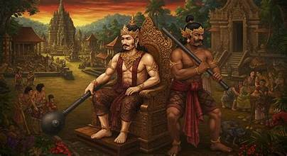
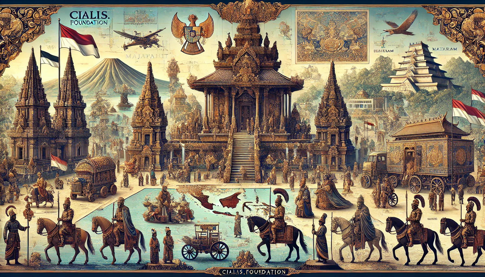

SEJARAH NUSANTARA

Nusantara merupakan istilah yang merujuk pada wilayah kepulauan yang
sekarang dikenal sebagai Indonesia. Sejak ribuan tahun lalu, Nusantara
menjadi tempat bertemunya berbagai kebudayaan besar dunia. Jalur
perdagangan internasional yang melintasi Selat Malaka menjadikan wilayah
ini kaya akan interaksi budaya, agama, dan ekonomi.
Kerajaan-kerajaan besar seperti Sriwijaya, Majapahit, Kutai,
Tarumanegara, serta kerajaan-kerajaan Islam seperti Samudera Pasai dan
Kesultanan Demak memainkan peran penting dalam membentuk identitas
bangsa. Kejayaan Majapahit pada abad ke-14 sering dianggap sebagai
puncak persatuan wilayah Nusantara.
Seiring perjalanan waktu, bangsa-bangsa Eropa datang dan mulai menguasai
perdagangan rempah-rempah. Masa kolonialisme yang panjang akhirnya
memunculkan semangat persatuan, yang kemudian melahirkan pergerakan
nasional dan puncaknya adalah Proklamasi Kemerdekaan Indonesia pada 17
Agustus 1945.
Hingga kini, sejarah panjang Nusantara menjadi fondasi penting yang
membentuk budaya, identitas, dan semangat kebangsaan masyarakat
Indonesia.
TOKOH
.jpeg)
1. Purnawarman – Raja Terbesar Tarumanegara Purnawarman adalah raja
termasyhur dari Kerajaan Tarumanegara yang memerintah sekitar abad ke-5
Masehi di wilayah Jawa Barat. Ia dikenal dari beberapa prasasti seperti
Prasasti Ciaruteun dan Prasasti Tugu.
Perannya:
Mengembangkan sistem irigasi, salah satunya Sungai Gomati. Menyebarkan
ajaran Hindu di wilayah Jawa bagian barat. Menjadi simbol kemakmuran dan
kekuasaan raja Hindu awal di Nusantara.
2. Balaputradewa – Raja Sriwijaya yang Mendunia Balaputradewa adalah
raja dari Kerajaan Sriwijaya yang terkenal karena hubungan
internasionalnya, terutama dengan India dan Tiongkok.
Perannya: Mengokohkan Sriwijaya sebagai pusat agama Buddha
Mahayana. Membangun hubungan diplomatik dengan Kerajaan Nalanda di
India. Memperluas pengaruh Sriwijaya hingga ke Semenanjung Malaka dan
Thailand selatan.
3.Airlangga – Pendiri Kerajaan Kahuripan Airlangga adalah tokoh penting
dalam sejarah Jawa Timur. Ia adalah anak Raja Udayana dari Bali dan
menikah dengan putri Raja Dharmawangsa Teguh.
Perannya: Menyatukan kembali wilayah Jawa Timur setelah serangan
dari Raja Wurawari. Mendirikan Kerajaan Kahuripan dan kemudian
membaginya menjadi Panjalu (Kediri) dan Jenggala. Mendukung perkembangan
sastra dan agama Hindu-Siwa.
4. Ken Arok – Pendiri Dinasti Singasari Ken Arok dikenal sebagai tokoh
legendaris yang mendirikan Kerajaan Singasari. Ia berasal dari rakyat
biasa namun berhasil menjadi raja.
Perannya: Mengakhiri kekuasaan Tunggul Ametung dan mendirikan
dinasti baru. Membangun kerajaan kuat berbasis kekuatan militer dan
politik. Melahirkan keturunan yang kelak menjadi bagian penting dalam
sejarah Majapahit.
5.Kertanegara – Raja Reformis dari Singasari Kertanegara adalah raja
terakhir Singasari dan dikenal sebagai pemimpin yang ambisius dalam
ekspansi wilayah.
Perannya: Melaksanakan Ekspedisi Pamalayu ke Sumatra untuk
menaklukkan kerajaan Melayu. Menolak utusan Kubilai Khan dari Mongol,
yang kelak memicu invasi Tiongkok ke Jawa. Mempersatukan berbagai
wilayah Nusantara di bawah Singasari.
PERISTIWA

Wilayah utama daratan Nusantara terbentuk dari dua ujung Superbenua
Pangaea di Era Mesozoikum (250 juta tahun yang lalu), namun bagian dari
lempeng benua yang berbeda. Dua bagian ini bergerak mendekat akibat
pergerakan lempengnya, sehingga pada saat Zaman Es terakhir telah
terbentuk selat besar di antara Paparan Sunda di barat dan Paparan Sahul
di timur. Pulau Sulawesi dan pulau-pulau di sekitarnya mengisi ruang di
antara dua bagian benua yang berseberangan. Kepulauan antara ini oleh
para ahli biologi sekarang disebut sebagai Wallacea, suatu kawasan yang
memiliki distribusi fauna yang unik.
Situasi geologi dan geografi ini
berimplikasi pada aspek topografi, iklim, kesuburan tanah, sebaran
makhluk hidup (khususnya tumbuhan dan hewan), serta migrasi manusia di
wilayah ini. Bagian pertemuan Lempeng Eurasia di barat, Lempeng
Indo-Australia di selatan, dan Lempeng Pasifik di timur laut menjadi
daerah vulkanik aktif yang memberi kekayaan mineral bagi tanah di
sekitarnya sehingga sangat baik bagi pertanian, namun juga rawan gempa
bumi. Pertemuan lempeng benua ini juga mengangkat sebagian dasar laut ke
atas mengakibatkan adanya formasi perbukitan karst yang kaya gua di
sejumlah tempat. Fosil-fosil hewan laut ditemukan di kawasan ini.
Nusantara terletak di daerah tropika, yang berarti memiliki laut hangat
dan mendapat penyinaran cahaya matahari terus-menerus sepanjang tahun
dengan intensitas tinggi. Situasi ini mendorong terbentuknya ekosistem
yang kaya keanekaragaman makhluk hidup, baik tumbuhan maupun hewan.
Lautnya hangat dan menjadi titik pertemuan dua samudera besar. Selat di
antara dua bagian benua (Wallacea) merupakan bagian dari arus laut dari
Samudra Hindia ke Samudera Pasifik yang kaya sumberdaya laut. Terumbu
karang di wilayah ini merupakan tempat dengan keanekaragaman hayati
sangat tinggi.
Kekayaan alam di darat dan laut mewarnai kultur awal
masyarakat penghuninya. Banyak di antara penduduk asli yang hidup
mengandalkan pada kekayaan laut dan membuat mereka memahami navigasi
pelayaran dasar, dan kelak membantu dalam penghunian wilayah Pasifik
(Oseania). Benua Australia dan perairan Samudera Hindia dan Pasifik di
sisi lain memberikan faktor variasi iklim tahunan yang penting.
Nusantara dipengaruhi oleh sistem muson dengan akibat banyak tempat yang
mengalami perbedaan ketersediaan air dalam setahun. Sebagian besar
wilayah mengenal musim kemarau dan musim penghujan. Bagi pelaut dikenal
angin barat (terjadi pada musim penghujan) dan angin timur.
Pada era perdagangan antarpulau yang mengandalkan kapal berlayar, pola
angin ini sangat penting dalam penjadwalan perdagangan. Dari sudut
persebaran makhluk hidup, wilayah ini merupakan titik pertemuan dua
provinsi flora dan tipe fauna yang berbeda, sebagai akibat proses
evolusi yang berjalan terpisah, namun kemudian bertemu. Wilayah bagian
Paparan Sunda, yang selalu tidak jauh dari ekuator, memiliki fauna tipe
Eurasia, sedangkan wilayah bagian Paparan Sahul di timur memiliki fauna
tipe Australia.
Kawasan Wallacea membentuk "jembatan" bagi percampuran
dua tipe ini, tetapi karena agak terisolasi ia memiliki tipe yang khas.
Hal ini disadari oleh sejumlah sarjana dari abad ke-19, seperti Alfred
Wallace, Max Carl Wilhelm Weber, dan Richard Lydecker. Berbeda dengan
fauna, sebaran flora (tumbuhan) di wilayah ini lebih tercampur, bahkan
membentuk suatu provinsi flora yang khas, berbeda dari tipe di India dan
Asia Timur maupun kawasan kering Australia, yang dinamakan oleh
botaniwan sebagai Malesia. Migrasi manusia kemudian mendorong persebaran
flora di daerah ini lebih jauh dan juga masuknya tumbuhan dan hewan
asing dari daratan Eurasia, Amerika, dan Afrika pada masa sejarah.
Sejarah Kerajaan-Kerajaan Besar di Nusantara: Dari Hindu-Buddha hingga
Islam
.jpeg)
1. Kerajaan-Kerajaan Hindu-Buddha di Nusantara
a. Kerajaan Kutai (Abad ke-4 M) Kutai Martadipura dikenal sebagai
kerajaan Hindu tertua di Indonesia yang terletak di Kalimantan Timur.
Bukti keberadaannya berasal dari prasasti Yupa yang ditulis dengan
aksara Pallawa dan berbahasa Sanskerta. Raja terkenal dari Kutai adalah
Mulawarman, yang dikenal dermawan dan taat pada ajaran Hindu.
b. Kerajaan Tarumanegara (Abad ke-5 M) Tarumanegara terletak di
Jawa Barat dan merupakan salah satu kerajaan Hindu yang berpengaruh.
Raja Purnawarman adalah tokoh penting yang dikenal karena
keberhasilannya membangun saluran irigasi untuk pertanian.
Prasasti-prasasti seperti Prasasti Ciaruteun menjadi bukti historis
kejayaan Tarumanegara.
c. Kerajaan Sriwijaya (Abad ke-7 M – 13 M) Berlokasi di Sumatera
Selatan, Sriwijaya merupakan kerajaan bercorak Buddha yang terkenal
sebagai pusat pembelajaran agama Buddha Mahayana dan perdagangan
maritim. Sriwijaya menjalin hubungan dengan India, Tiongkok, dan wilayah
Asia Tenggara lainnya. Catatan I-Tsing, seorang pendeta Tiongkok,
menyebutkan bahwa Sriwijaya memiliki pusat pendidikan Buddha ternama di
masa itu.
d. Kerajaan Mataram Kuno (Abad ke-8 – 10 M) Kerajaan Mataram Kuno
terbagi menjadi dua dinasti besar: Dinasti Sanjaya (Hindu) dan Dinasti
Syailendra (Buddha). Bukti kebesaran kerajaan ini tampak dari
candi-candi megah seperti Candi Borobudur dan Candi Prambanan. Mataram
Kuno merupakan pusat kebudayaan dan agama yang penting di Jawa.
e. Kerajaan Kediri dan Singasari (Abad ke-11 – 13 M) Kediri
merupakan kerajaan Hindu yang terkenal akan karya sastranya seperti
“Kakawin Bharatayuddha”. Kerajaan ini kemudian digantikan oleh Singasari
yang dipimpin oleh Ken Arok dan dilanjutkan oleh Raja Kertanegara.
Singasari dikenal karena ambisinya menyatukan wilayah Nusantara melalui
Ekspedisi Pamalayu.
2. Kerajaan Majapahit: Puncak Kejayaan Nusantara Majapahit merupakan
kerajaan Hindu-Buddha terbesar dan paling berpengaruh dalam sejarah
Nusantara. Berdiri pada tahun 1293, Majapahit didirikan oleh Raden
Wijaya. Puncak kejayaan Majapahit terjadi di bawah kepemimpinan Raja
Hayam Wuruk (1350–1389) dan Mahapatih Gajah Mada. Melalui Sumpah
Palapa, Gajah Mada bertekad mempersatukan seluruh Nusantara. Majapahit
dikenal memiliki sistem administrasi yang rapi, diplomasi yang kuat,
dan armada laut yang besar. Kitab Negarakertagama karya Mpu Prapanca
menggambarkan wilayah kekuasaan Majapahit yang sangat luas, bahkan
mencakup sebagian besar Asia Tenggara.
3. Kerajaan-Kerajaan Islam di Nusantara Masuknya Islam ke
Nusantara mengawali babak baru dalam sejarah kerajaan-kerajaan lokal.
Islam masuk melalui para pedagang dari Gujarat, Persia, Arab, dan juga
Tiongkok. Seiring waktu, kerajaan-kerajaan Islam berkembang
menggantikan kerajaan Hindu-Buddha yang mulai melemah.
a. Kesultanan Samudera Pasai (Abad ke-13 M) Kesultanan Samudera
Pasai adalah kerajaan Islam pertama di Nusantara. Terletak di pesisir
utara Aceh, kerajaan ini menjadi pusat perdagangan dan penyebaran
Islam di Asia Tenggara. Sultan Malik al-Saleh adalah raja pertamanya.
b. Kesultanan Malaka Kesultanan Malaka berkembang pesat pada
abad ke-15 sebagai pusat perdagangan internasional. Letaknya yang
strategis membuat Malaka menjadi pelabuhan penting bagi para pedagang
dari Arab, India, Tiongkok, dan Nusantara. Islam menyebar cepat
melalui aktivitas perdagangan di wilayah ini.